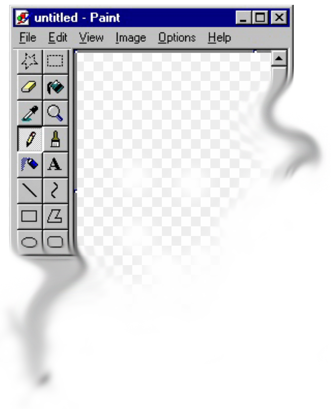

Articles (Chronologically)
- Cafe with a mission to explain: Cyberia offers chance to check your e-mail and network over coffee and croissantA brief explanation of what a cybercafe is, as well as a profile of Cyberia, and its founder, Eva Pascoe and her mission in creating Cyberia. 1994
- All About EvaConversation with Eva Pascoe the founder of Cyberia, discussing the culture, changing nature and aesthetics of cyber cafes. By Susie Forbes. 1996
- Cybsercafes@Paris Brief profile on the author's favorite cyber cafes in Paris. 2000
- Girls' Night Out on the Net A messy article about what women want from the web and why girl’s clubs are a must. 2000
- !!!!!BROKEN LINK!!!!! Cybercafes @ the CrossroadsWritten at arguably the turning point of cybercafes in the west, the writer takes stock of Cyberia after approximately 6 years in operation. The article also offers a helpful list of “dot com” themed cocktails. Mark Edmonds. 2001
- !!!!!BROKEN LINK!!!!! Ten years of Cyberia An article commemorating the 10th anniversary of Cyberia. 2004
- Yahoo! Mail unveils the world`s best places to surf the net; Wednesday, 1st September 2004 marks ten years of internet cafes A press release publicizing results for Yahoo!'s world's best cyber cafe contest. Nominations were submitted openly and judged by a panel of travel and web experts. 2004
- Internet Café Hobo Archives A running series of blog posts by a BBC writer in a sort of "Around the World in 80 Days" by internet cafe format (Though focusing primarily on cafes in Africa). The blog compliments a podcast available under "Other Resources" below. The landing page contains numerous articles nested by date. Nick Baker. 2009-2010
- Café Culture History, Part 5: The History of the Cybercafé A brief global history of cybercafes. 2012
- the Weird Sketchy History of Internet Cafes A rundown of early cybercafe history and their links to piracy and gaming addiction. 2015
- 20 years on: India’s cyber cafes disappearing as pocket internet takes over An exploration of the arch of internet cafes in India, and what they have done to try and stay useful. 2016
- Remembering The Horseshoe, Quite Possibly The Nation's First Internet Cafe Brief memoir with video on an early San Francisco cafe. Great comments section where people share memories. 2016
- Apple once considered building futuristic cybercafes instead of Apple Stores Illustrations of a future that could have been, had Apple pursued its internet cafe idea circa 1998. Written 2017
- When your home is a Japanese internet cafe, but the coronavirus pandemic forces you out An explainer on the phenomenon of "internet cafe refugees" and COVID's impact on their already precarious living situation. 2020
- The rise and fall of the Cyber-café Dynasty in Nigeria A brief timeline style write up on cultural, financial and technological shifts that led to the decline in Cyber cafes in Nigeria. Mitchel Okorie. 2021
- The era of neighbourhood cyber cafe is over Quotes from a number of Indian cyber cafe owners about their prospects and how they manage to stay afloat. 2022
- A Look into the History of Cyber Cafes: Cyber Cafe in Hong Kong A seemingly vintage site explaining some provenance of cybe cafes specific to Hong Kong. Date unknown.
- The Korean PC Bang: Everything To Know Before You Go! Brief history of PC Bangs (PC Rooms) in South Korea, and their evolution into their present form as well as utilitarian info about using them. Asher Chase. Date unknown.
Videos
Other Interesting Resources